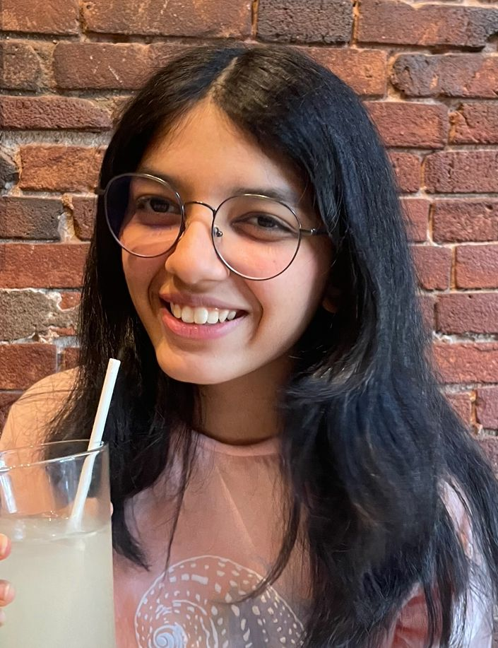

Hi, I'm Supriyaa!
I'm an aspiring writer and developer drawn to the space where technology meets storytelling. I care about building things that aren't just functional—but feel something.
My work often lives in that in-between: logic and creativity, structure and emotion, code and narrative. Whether I’m designing a tool or writing a piece, I’m always chasing meaning.
Currently exploring projects in AI, accessibility, and human-centered design— while also staying rooted in literature and personal expression.